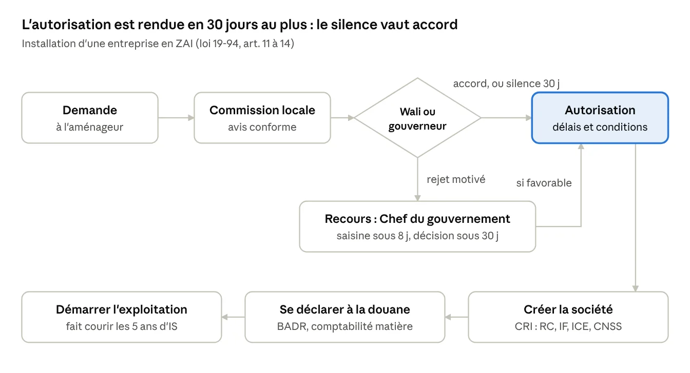
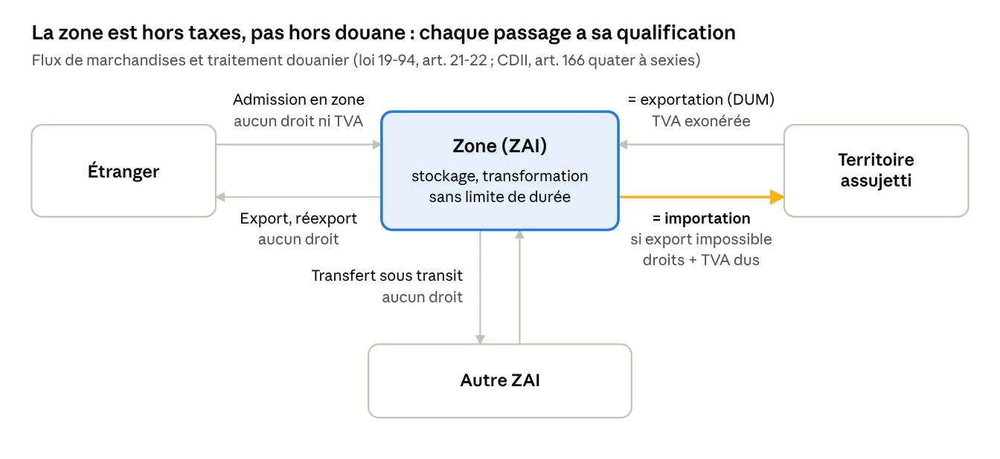

Accueil
›
Zones d'accélération
›
Logigrammes
2 logigrammes
Logigrammes
{ } zones-acceleration_logigrammes.json
Logigramme 1
Procédure d’installation d’une entreprise en ZAI
Paragraphe lié :
n° 1-030

Logigramme 2
Flux de marchandises et traitement douanier
Paragraphe lié :
n° 1-100
